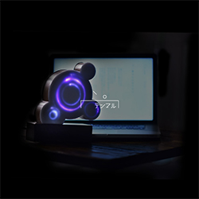
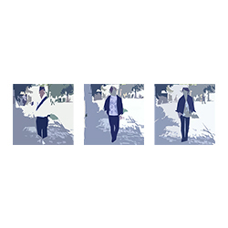
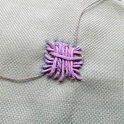
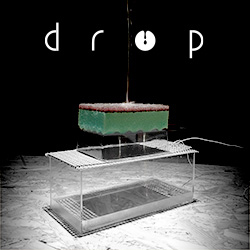
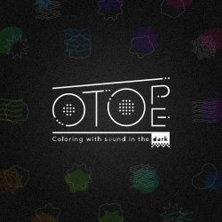
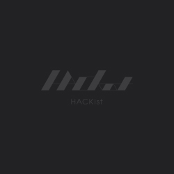
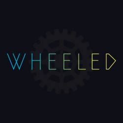

博報堂アイ・スタジオのクリエイティブラボラトリー「HACKist」は、第３回の展示を2016年5月21日から28日まで神宮前galaxy gingakeiで行います。今回は新たな10以上の作品展示のみならず、DE DE MOUSEとのコラボレーションライブ、様々なシーンの最前線で活躍するアーティストのトークショーを予定しています。
-
DIG LOG
-
Pechat
-
PLUS ANIMA
-
TREK TRACK
-
PLAN-NET
-
POSTIE
-
セットした野菜たちに触れることで、野菜が自身のトレ―サビリティを話したり、自己紹介したりする店頭プロモーションツール。今回の展示では、コンパクトに生まれ変わった新しいトーカブル・ベジタブルを披露します。
トーカブル・ベジタブル
-
別世鏡
-
次世代の漫画 Ⅰ
-

コンピュータに向かう詩人の姿に覚える違和感は彼らの詩に存在する意味と構造以外の概念的な「間」が原因ではないか。ペン先を上げ改行する動作、句読点を打つ一息のようにキー入力において失われる「間」を表現し、詩人をより詩人らしくする作品を制作。
、。（テンマル）
-

平面だけの表現だけではなく、ARを使って音楽を「空間」で捉える新たなミュージックビデオに挑戦しました。幾何学な憧憬を言葉と音で表現した抽象的な映像を、スマートデバイスから覗き込むことで、映像には映らない言葉の「裏」を伝えます。
Cubic Roove
-

布は衣服からインテリア等、人の生活に欠かせないものである一方、中長期的な経年変化を除きその色彩は変わらない。ふわッチは、ステッチ状に縫い付けた糸にインタラクティブ性を加えることで、繊維の色彩・日常への変化を与えることを目的にしている。
ふわッチ
-

現象の中に潜んだ独特のリズムを抜き出すことで、自然のことわりに触れ、そこにあるかも知れないなにがしかのメッセージを読み取る試み。水の染みこんだスポンジから水滴が落ちる時、そこにどのような規則性が生じうるのか、音に置き換えることで観察する。
drop
-

OTOPE は触感と聴感の探求をテーマとした暗闇で行う体験型プロダクトです。「音の肌」を身に着けて物に触れたり、体に乗せるとその物や素材の持つ声を「聞きわける」ことができるようになる、目の不自由な人も共有できる新しい感覚世界を提供します。
OTOPE (Product by K-)
-

D・E・E・PはDigital Enhancement Effective Programの略称で、 デジタルを使った映像効果の実験プロジェクトです。 DEDE MOUSE Liveにて人工知能とShaderを活用した映像表現を実施します。
D・E・E・P
-
おれは、人工知能ラッパー。まだまだひよっこ。DEDE MOUSE Liveに登場するよ。人間ラッパーより、文脈はハチャメチャ。だけど、魅せつけるぞ、コンピュータの語彙力！
人工知能ラッパー
-

フィジカル&インタラクティブに制御出来る車輪型の新しいDMX照明装置を開発。5/21, 28のDEDE MOUSE Liveにてエキシビション演出として稼動予定。
WHEELED
【 ご注意事項 】
ご要望多数につき、追加チケット枠を用意いたしました。
PEATIXでご予約頂いた方優先に、当日ご来場のみなさまご入場いただけます。
※ご来場者数によっては、会場キャパシティに合わせ入場制限をさせて頂く場合がございます。

HACKistのR&Dチームによる技術研究から生まれたプロトタイピングとDE DE MOUSEサウンドが融合するショーケースを披露します。初回の21日(土)は、人工知能によるラップやVJ、筋肉の動きと連動する光る車輪「WHEELED」を現場でプレゼンテーションしながらチューニングする、プロトタイピングの公開リハーサルと共にお届けします。※28日(土)も同様のショーケースを行う予定です。内容は予告なく変更される場合があります。
DE DE MOUSE
織り重なり合う、計算しつくされたメロディと再構築された「歌」としてのカットアップサンプリングボイスと流麗に進む和音で構成された極上のポップソング。ライブスタイルの振れ幅も広く、ツインドラムでの構成から縦横無尽に飛び回るDJスタイル、即興まで多種多様のステージングを展開している。FUJI ROCK FESTIVAL、TAICOCLUB、RISING SUN ROCK FESTIVAL、SonarSound Tokyoの他に海外でもライブを行い活躍。近年では実験的な試みを体現する主催イベント“not”、“DE DE MOUSE × 2”やプラネタリウムを舞台にした公演を行い、各方面から多くの注目を受けている。2015年12月には3年ぶり5枚目のフルアルバム「farewell holiday!」をリリース、新たな音楽性にトライしている。

VJ：HACKist(Future Create Lab)、剛田商店
DE DE MOUSE × HACKist
VJ：HACKist(Future Create Lab)、剛田商店
【ご注意事項】
ご来場者さま、全員ご参加いただけます。
※ご来場者数によっては、会場キャパシティに合わせ入場制限をさせて頂く場合がございます。
事前にPEATIXのご予約の方が優先的にご入場いただけます。
ここにトークセッション概要が入ります。ここにトークセッション概要が入ります。ここにトークセッション概要が入ります。ここにトークセッション概要が入ります。ここにトークセッション概要が入ります。
-
小杉 幸一 (博報堂)
-
木村 浩康(Rhizomatiks)
-
望月 重太朗(HACKist)
ここにトークセッション概要が入ります。ここにトークセッション概要が入ります。ここにトークセッション概要が入ります。ここにトークセッション概要が入ります。ここにトークセッション概要が入ります。
-
灰色ハイジ
-
Licaxxx
ここにトークセッション概要が入ります。ここにトークセッション概要が入ります。ここにトークセッション概要が入ります。ここにトークセッション概要が入ります。ここにトークセッション概要が入ります。
-
未来予報研究会
-
下田 彦太 (CluB_A/NOddIN)
-
望月 重太朗(HACKist)
【 イベントに関するご注意 】
・会場のキャパシティに合わせ、入場規制をさせていただく可能性があります。
・「TALK SESSION」のイベント中は、イベントご予約のお客様優先にご案内させていただきます。
・都合によりイベントの内容変更や中止がある場合がございます。
・会場までの交通費等、イベント参加に関わる費用は、受付が終了、または中止となった場合でも、お客様のご負担となります。
・イベント当日取材が入ります。撮影させて頂いた動画・写真は、ウェブサイト・SNSにて使用させて頂く場合がございます。あらかじめご了承ください。